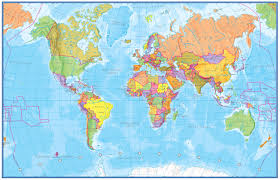
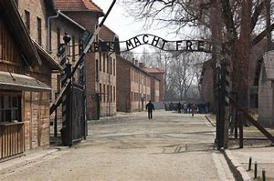

My Travels

Transition Year Trip
On my transition year trip we visited Krakow in Poland.

Volunteering
I have also travelled to Calcutta where I got to work as a volunteer for two weeks helping the less fortunate.
Holidays